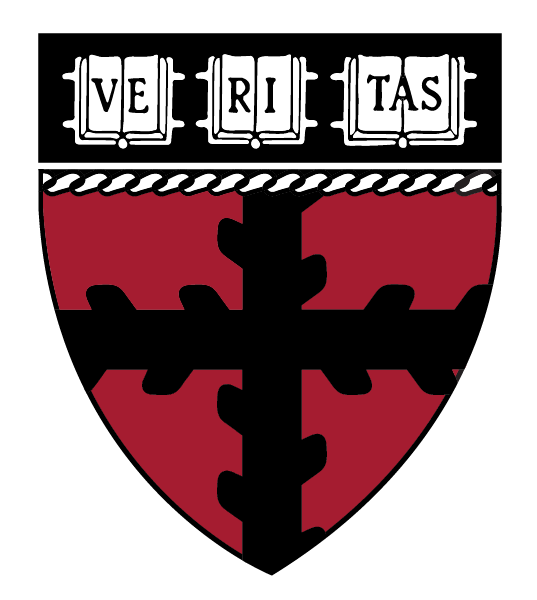

Programming Languages at Harvard
The Programming Languages Group is composed of faculty and students (in MD309)
at the School of Engineering and Applied
Sciences who are interested in problems relating to programming language
foundations, design, and implementation.
Seminars
The PL Seminar typically happens Wednesdays at 1600 in Maxwell Dworkin 223. We
occasionally have speakers at other times. Check the PL Seminar's
Google calendar
for details.
Research Projects
- Shill: Scripting with Least Privilege
-
Shill is a shell scripting language designed to make it easy to follow the
Principle of Least Privilege. Shill uses capabilities to control what access
scripts have to your system. Every Shill script comes with a contract that
describes what it can do, so users can run third-party scripts with
confidence. Using capability-based sandboxes, Shill's security guarantees extend
even to native executables launched by scripts.
- GoNative: Safe Execution of Native Code
- Accrue
- Robobees
- CHILI
- CRASH-SAFE
- Privacy Tools for Sharing Research Data
Mailing Lists
We have two mailing lists dedicated to programming
languages. The md309
list is for students and former students of the PL
Lab. The programming
list is for a wider audience of people (at Harvard and elsewhere) who are
interested in programming languages.
People
Faculty
Research Staff
Ph.D. Students
Post-docs
Recent Ph.D. Alumni
Recent Post-doc Alumni
Courses
- Fa 2013, CS 252r: Advanced Topics in Programming Languages
- Fa 2012, CS 252r: Advanced Functional Language Compilation
- Fa 2011, CS 252r: Advanced Topics in Programming Languages
- Sp 2011, CS 252r: Program Analysis
- Fa 2009, CS 252r: Language-based Security and Concurrency
- Sp 2007, CS 250r: Integrating Specification and Verification
- Sp 2006, CS 256: Programming Languages and Semantics
- Fa 2005, CS 257: Programming with Concurrency
- Sp 2005, CS 256: Programming Languages and Semantics
- Sp 2004, CS 255: Topics in Language-Based Security